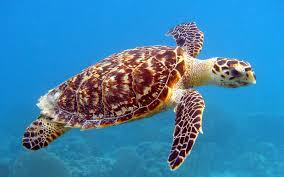

Penyu adalah hewan yang banyak ditemukan di pesisir pantai Indonesia sejak dahulu.
Ikan ini dikenal dengan warna unik dan ukuran sekitar 8 cm. Termasuk ikan populer di dunia.

Lionfish atau volitans adalah ikan berbisa dari keluarga Scorpaenidae, artinya ikan kalajengking.
Ikan ini populer di kalangan penggemar ikan hias karena bentuk dan pola warnanya yang menarik.